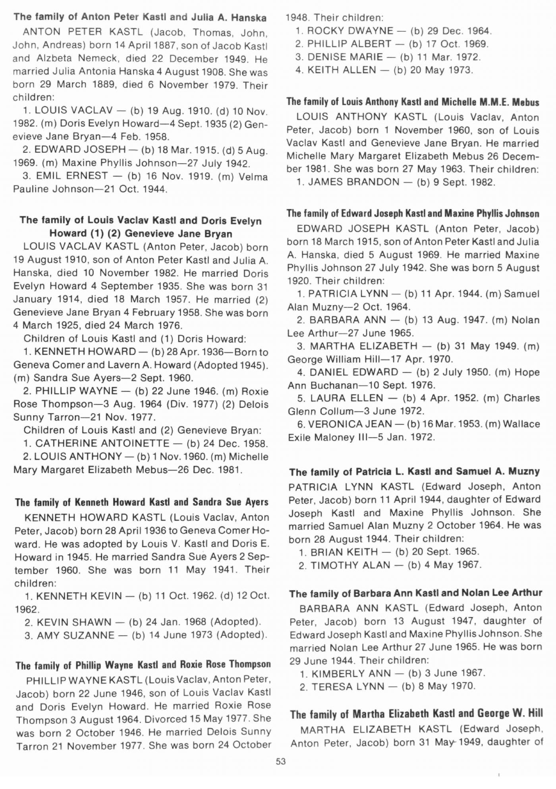

The book · The Family of Jacob Kastl
Page 53 The family of Anton Peter Kastl and Julia A. Hanska


Transcription
The family of Anton Peter Kastl and Julia A. Hanska
ANTON PETER KASTL (Jacob, Thomas, John, John, Andreas) born 14 April 1887, son of Jacob Kastl and Alzbeta Nemeck, died 22 December 1949. He married Julia Antonia Hanska 4 August 1908. She was born 29 March 1889, died 6 November 1979. Their children:
- LOUIS VACLAV — (b) 19 Aug. 1910. (d) 10 Nov. 1982. (m) Doris Evelyn Howard—4 Sept. 1935 (2) Genevieve Jane Bryan—4 Feb. 1958.
- EDWARD JOSEPH — (b) 18 Mar. 1915. (d) 5 Aug. 1969. (m) Maxine Phyllis Johnson—27 July 1942.
- EMIL ERNEST — (b) 16 Nov. 1919. (m) Velma Pauline Johnson—21 Oct. 1944.
The family of Louis Vaclav Kastl and Doris Evelyn Howard (1) (2) Genevieve Jane Bryan
LOUIS VACLAV KASTL (Anton Peter, Jacob) born 19 August 1910, son of Anton Peter Kastl and Julia A. Hanska, died 10 November 1982. He married Doris Evelyn Howard 4 September 1935. She was born 31 January 1914, died 18 March 1957. He married (2) Genevieve Jane Bryan 4 February 1958. She was born 4 March 1925, died 24 March 1976.
Children of Louis Kastl and (1) Doris Howard:
- KENNETH HOWARD — (b) 28 Apr. 1936—Born to Geneva Comer and Lavern A. Howard (Adopted 1945). (m) Sandra Sue Ayers—2 Sept. 1960.
- PHILLIP WAYNE — (b) 22 June 1946. (m) Roxie Rose Thompson—3 Aug. 1964 (Div. 1977) (2) Delois Sunny Tarron—21 Nov. 1977.
Children of Louis Kastl and (2) Genevieve Bryan:
- CATHERINE ANTOINETTE — (b) 24 Dec. 1958.
- LOUIS ANTHONY — (b) 1 Nov. 1960. (m) Michelle Mary Margaret Elizabeth Mebus—26 Dec. 1981.
The family of Kenneth Howard Kastl and Sandra Sue Ayers
KENNETH HOWARD KASTL (Louis Vaclav, Anton Peter, Jacob) born 28 April 1936 to Geneva Comer Howard. He was adopted by Louis V. Kastl and Doris E. Howard in 1945. He married Sandra Sue Ayers 2 September 1960. She was born 11 May 1941. Their children:
- KENNETH KEVIN — (b) 11 Oct. 1962. (d) 12 Oct. 1962.
- KEVIN SHAWN — (b) 24 Jan. 1968 (Adopted).
- AMY SUZANNE — (b) 14 June 1973 (Adopted).
The family of Phillip Wayne Kastl and Roxie Rose Thompson
PHILLIP WAYNE KASTL (Louis Vaclav, Anton Peter, Jacob) born 22 June 1946, son of Louis Vaclav Kastl and Doris Evelyn Howard. He married Roxie Rose Thompson 3 August 1964. Divorced 15 May 1977. She was born 2 October 1946. He married Delois Sunny Tarron 21 November 1977. She was born 24 October 1948. Their children:
- ROCKY DWAYNE — (b) 29 Dec. 1964.
- PHILLIP ALBERT — (b) 17 Oct. 1969.
- DENISE MARIE — (b) 11 Mar. 1972.
- KEITH ALLEN — (b) 20 May 1973.
The family of Louis Anthony Kastl and Michelle M.M.E. Mebus
LOUIS ANTHONY KASTL (Louis Vaclav, Anton Peter, Jacob) born 1 November 1960, son of Louis Vaclav Kastl and Genevieve Jane Bryan. He married Michelle Mary Margaret Elizabeth Mebus 26 December 1981. She was born 27 May 1963. Their children:
- JAMES BRANDON — (b) 9 Sept. 1982.
The family of Edward Joseph Kastl and Maxine Phyllis Johnson
EDWARD JOSEPH KASTL (Anton Peter, Jacob) born 18 March 1915, son of Anton Peter Kastl and Julia A. Hanska, died 5 August 1969. He married Maxine Phyllis Johnson 27 July 1942. She was born 5 August 1920. Their children:
- PATRICIA LYNN — (b) 11 Apr. 1944. (m) Samuel Alan Muzny—2 Oct. 1964.
- BARBARA ANN — (b) 13 Aug. 1947. (m) Nolan Lee Arthur—27 June 1965.
- MARTHA ELIZABETH — (b) 31 May 1949. (m) George William Hill—17 Apr. 1970.
- DANIEL EDWARD — (b) 2 July 1950. (m) Hope Ann Buchanan—10 Sept. 1976.
- LAURA ELLEN — (b) 4 Apr. 1952. (m) Charles Glenn Collum—3 June 1972.
- VERONICA JEAN — (b) 16 Mar. 1953. (m) Wallace Exile Maloney III—5 Jan. 1972.
The family of Patricia L. Kastl and Samuel A. Muzny
PATRICIA LYNN KASTL (Edward Joseph, Anton Peter, Jacob) born 11 April 1944, daughter of Edward Joseph Kastl and Maxine Phyllis Johnson. She married Samuel Alan Muzny 2 October 1964. He was born 28 August 1944. Their children:
- BRIAN KEITH — (b) 20 Sept. 1965.
- TIMOTHY ALAN — (b) 4 May 1967.
The family of Barbara Ann Kastl and Nolan Lee Arthur
BARBARA ANN KASTL (Edward Joseph, Anton Peter, Jacob) born 13 August 1947, daughter of Edward Joseph Kastl and Maxine Phyllis Johnson. She married Nolan Lee Arthur 27 June 1965. He was born 29 June 1944. Their children:
- KIMBERLY ANN — (b) 3 June 1967.
- TERESA LYNN — (b) 8 May 1970.
The family of Martha Elizabeth Kastl and George W. Hill
MARTHA ELIZABETH KASTL (Edward Joseph, Anton Peter, Jacob) born 31 May 1949, daughter of
Transcriber’s notes
The Phillip Wayne Kastl entry runs from the foot of the left column ('She was born 24 October') to the top of the right column ('1948. Their children:'); joined. Page ends mid-sentence in the Martha Elizabeth Kastl entry ('daughter of'), continued on next page. A small stray mark after 'May' in 'born 31 May 1949'. Spelling 'Alzbeta Nemeck' as printed.